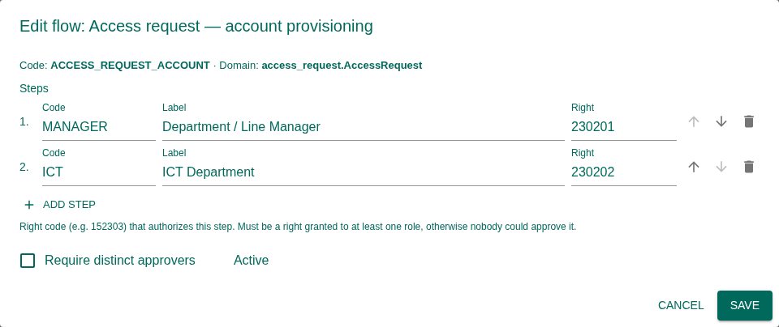

How approvals work across TASAF MIS, and how to decide the requests waiting for you. Changes that need a second person (an account application, a payment-detail correction, MUSE settings, a News Feed post) become an approval request. A request passes through its flow's steps in order; each step is decided by someone holding that step's right.
1. Purpose, Roles, and Access
| Right | Grants |
|---|---|
240201 | The Approvals page. |
240301 | Cancel a request. |
240302 | Return a request for correction. |
240303 | Decide a step on another approver's behalf (override). |
240101 / 240102 / 240103 | See / manage / edit Approval Flows. |
Deciding a step needs that step's own right as well, e.g. right 270903 to approve a MUSE
settings change.
2. Key Concepts
| Term | Meaning |
|---|---|
| Flow | The approval route for one kind of change, e.g. account applications (Manager → ICT), MUSE settings changes, case payment changes, News Feed posts, trainings. |
| Step | One decision in a flow, with the right that authorizes it. Steps are sequential: each unlocks once the previous one is approved. |
| Distinct approvers | When set, the same person cannot decide two steps of one request. |
| Requester | The person who made the change. They can never approve it. |
3. My Approvals and All Requests
Open Approvals. My Approvals lists the requests whose current step you can decide; All Requests lists every request you may see. Filter by flow, status and date; double-click to open. Many requests also appear in the Tasks inbox, and deciding in either place has the same effect.
4. Decide a Request
The request page shows the flow and current step (Step 2 of 3 — waiting on ICT), What is being approved, and for settings changes a What will change table with each current and new value, plus the reason given.
- Read the change. Open record opens the record it concerns.
- Write a Decision note. It is required to reject, return or cancel, and visible to the next approver.
- Optionally add a Signature (your typed name or a reference).
- Choose Approve, Reject, or Return for correction (sent back to the requester to fix).
The History tab lists every decision with its note. When the last step is approved, the change is applied by the module it belongs to.
5. Approval Flows (Administrators)
Under Approval Flows, each flow lists its steps. Edit flow lets you add, remove or reorder steps, set each step's label and right, and require distinct approvers. A flow edited here is marked customised.


6. Statuses
| Request | Meaning |
|---|---|
| Pending | A step is waiting for a decision |
| Approved | Every step approved; the change is applied |
| Rejected | A step was rejected; nothing is applied |
| Returned | Sent back for correction |
| Cancelled | Withdrawn; nothing is applied |
A step can also be Skipped when its flow says so.
7. Troubleshooting
| Problem | What to do |
|---|---|
| A request is never decided | Check that someone holds the current step's right (Approval Flows), and that it is not the requester. |
| I approved but nothing changed | Later steps may still be pending; read the step list. |
| The Approvals menu is missing | It needs right 240201. |